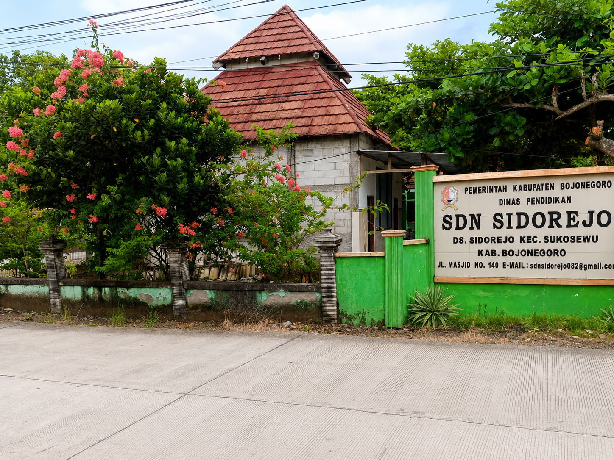

Website Resmi
SD NEGERI SIDOREJO
Kecamatan Sukosewu Kabupaten Bojonegoro
Mewujudkan peserta didik yang beriman, berkarakter, berprestasi, dan berbudaya lingkungan.
NPSN
20541021
Status
Negeri
Akreditasi
B

Sekolah Ramah Anak
Lingkungan belajar yang nyaman, aman, bersih, serta mendukung perkembangan karakter peserta didik.
Lihat Berita